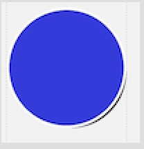

Android XML 绘图
Thu 06 October 2016
Android XML 绘图
简介
Android 的 XML 绘图主要涉及到三个元素：shape, layer-list, selector
- shape是基本的元素，shape描述了基本图形，如rectangle, oval, line, ring,以及相关的属性.
- layer-list 是shape的组合，可以将多个 shape 叠加起来，组成更加复杂的图形。
- selector 则用来按照空间的状态，如button 是否被press，是否获得focus等，选择不同的图片或者形状元素。
shape
shape 有四种：
- rectangle: 矩形，可以通过设置conner得到圆角
- oval：可以画椭圆，圆形
- line：虚线，实线
- ring：圆环
shape所支持的参数：
- size：制定大小
- solid：填充颜色
- stroke：边框的属性，宽度，颜色，类型等
- conners：conner的半径，配合rectangle使用，可以获得圆角矩形
- gradient：颜色渐变
- padding：
下面列举具体有哪些属性：
<shape
xmlns:android="http://schemas.android.com/apk/res/android"
//默认为rectangle
android:shape=["rectangle"|"oval"|"line"|"ring"]>
<corners //当shape="rectangle"时使用
//半径，会被后面的单个半径属性覆盖
android:radius="integer"
android:topLeftRadius="integer"
android:topRightRadius="integer"
android:bottomLegtRadius="integer"
android:bottomRightRadius="integer"/>
<gradient //渐变
android:angle="integer"
android:centerX="integer"
android:centerY="integer"
android:centerColor="color"
android:endColor="color"
android:gradientRadius="integer"
android:startColor="color"
android:type=["linear"|"radial"|"sweep"]
android:useCenter=["true"|"false"]/>
<padding //上下左右的间距
android:left="integer"
android:top="integer"
android:right="integer"
android:bottom="integer"/>
<size
android:width="integer"
android:height="integer"/>
<solid //填充颜色
android:color="color"/>
<stroke //指定边框
android:width="integer"
android:color="color"
//虚线宽度
android:dashWidth="integer"
//虚线间隔宽度，如果需要实线，则不设置此项和上面一项
android:dashGap="integer"/>
</shape>
layer-list
layer-list 可以将多个shape组合在一起，形成更加复杂的图形，比如可以形成阴影等。 用例子说话：
<?xml version="1.0" encoding="utf-8"?>
<layer-list xmlns:android="http://schemas.android.com/apk/res/android">
<item//距离上下左右的距离
android:top="4dp"
android:left="4dp">
<shape android:shape="oval">
<solid android:color="#FF333333" />
</shape>
</item>
<item>
<shape android:shape="oval">
<solid android:color="@color/annotation_color_blue" />
<stroke
android:width="1dp"
android:color="#FFF"
android:dashGap="0dp" />
<size
android:width="48dp"
android:height="48dp" />
</shape>
</item>
</layer-list>
以上xml绘制的图形如下所示：

selector
selector 的元素可以是xml绘制的推行，也可以是颜色，图片等等 仍然用例子说话：
<?xml version="1.0" encoding="UTF-8"?>
<selector xmlns:android="http://schemas.android.com/apk/res/android">
<item android:state_focused="true" android:drawable="@mipmap/bg_input_p" />
<item android:drawable="@mipmap/bg_input_n" />
</selector>